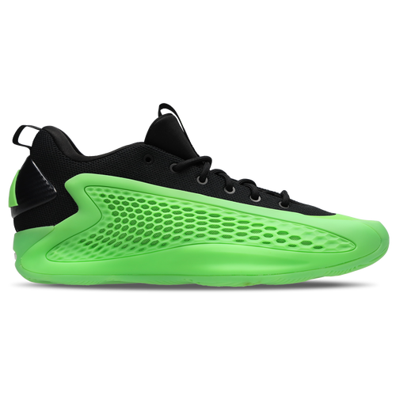

la Anthony Edwards 1 est une paire de chez adidas qui est très apprécié de la
communauté basket.
Ces qualités sont:
- L'amorti de la Puma Anthony Edwards 1 offre confort et réactivité, avec une semelle intermédiaire qui absorbe
les chocs et procure un bon retour d'énergie. Il aide à réduire les impacts et assure stabilité et agilité sur le
terrain.
- Le grip de la Puma Anthony Edwards 1 est conçu pour offrir une adhérence optimale sur le terrain. Sa semelle en
caoutchouc, dotée d’un motif de traction performant, assure une excellente stabilité et un contrôle précis lors
des accélérations et des changements de direction rapides.
- Le maintien de la Puma Anthony Edwards 1 est assuré par une tige haute et un système de laçage précis, offrant
un excellent soutien autour de la cheville. Cela permet un ajustement sécurisé, réduisant les risques de torsions
tout en garantissant une stabilité maximale lors des mouvements rapides sur le terrain.


La Harden 8 d'Adidas allie design moderne et technologies avancées, offrant confort,
soutien et réactivité pour les joueurs exigeants sur le terrain.
Ces qualités sont:
- L'amorti de la Harden 8 d'Adidas, avec la technologie Lightstrike, offre une absorption des chocs optimale et un
retour d'énergie rapide, assurant agilité et réactivité lors des mouvements rapides et des sauts.
- Le grip de la Harden 8 d'Adidas est conçu pour offrir une adhérence maximale grâce à sa semelle en caoutchouc et
son motif de traction. Il assure une excellente stabilité et un contrôle précis lors des accélérations et des
changements de direction rapides sur le terrain.
- Le maintien de la Harden 8 d'Adidas est assuré par sa tige ajustable et son système de laçage, offrant un
excellent soutien autour du pied et de la cheville. Cela garantit une stabilité optimale, permettant des
mouvements rapides et fluides tout en réduisant les risques de torsions sur le terrain.


La Dame 9 d'Adidas offre performance et style, avec des technologies avancées pour un
confort, un soutien et une réactivité optimalle sur le terrain.
Ces qualités sont:
- L'amorti de la Dame 9 d'Adidas utilise la technologie Lightstrike, offrant une absorption des chocs efficace et
un retour d'énergie rapide. Cela permet un confort optimal tout en assurant réactivité et agilité lors des
mouvements rapides sur le terrain.
- Le grip de la Dame 9 d'Adidas offre une adhérence exceptionnelle grâce à sa semelle en caoutchouc et son motif
de traction, assurant stabilité et contrôle lors des accélérations et changements de direction.
- Le maintien de la Dame 9 d'Adidas est assuré par sa tige ajustée et son système de laçage, offrant un excellent
soutien autour du pied et de la cheville. Cela permet une stabilité optimale lors des mouvements rapides et des
changements de direction sur le terrain.
 retour à l'acceuil
Vous pouvez retouver les chaussures Adidas ici.
retour à l'acceuil
Vous pouvez retouver les chaussures Adidas ici.